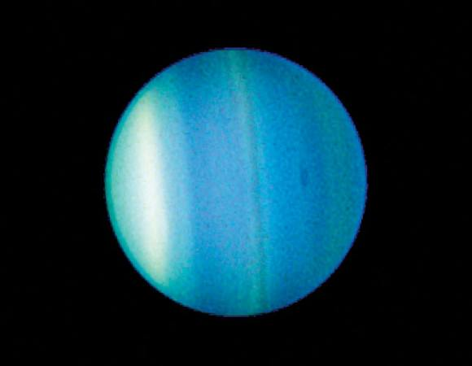

Uranus
Uranus is the seventh planet from the Sun. Its name is a reference to the Greek god of
the sky, Uranus, who, according to Greek mythology, was the great-grandfather of Ares (Mars), grandfather of
Zeus (Jupiter) and father of Cronus (Saturn). It has the third-largest planetary radius and fourth-largest
planetary mass in the Solar System. Uranus is similar in composition to Neptune, and both have bulk chemical
compositions which differ from that of the larger gas giants Jupiter and Saturn. For this reason, scientists
often classify Uranus and Neptune as "ice giants" to distinguish them from the other giant planets.
As with gas giants, ice giants also lack a well defined "solid surface." Uranus's atmosphere is similar to
Jupiter's and Saturn's in its primary composition of hydrogen and helium, but it contains more "ices" such
as water, ammonia, and methane, along with traces of other hydrocarbons. It has the coldest planetary
atmosphere in the Solar System, with a minimum temperature of 49 K (−224 °C; −371 °F), and has a complex,
layered cloud structure with water thought to make up the lowest clouds and methane the uppermost layer of
clouds. The interior of Uranus is mainly composed of ices and rock.
Like the other giant planets, Uranus has a ring system, a magnetosphere, and numerous moons. The Uranian
system has a unique configuration because its axis of rotation is tilted sideways, nearly into the plane of
its solar orbit. Its north and south poles, therefore, lie where most other planets have their equators.
In 1986, images from Voyager 2 showed Uranus as an almost featureless planet in visible light, without the
cloud bands or storms associated with the other giant planets. Voyager 2 remains the only spacecraft to
visit the planet. Observations from Earth have shown seasonal change and increased weather activity as
Uranus approached its equinox in 2007. Wind speeds can reach 250 metres per second (900 km/h; 560 mph).